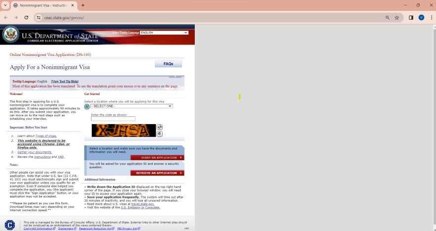
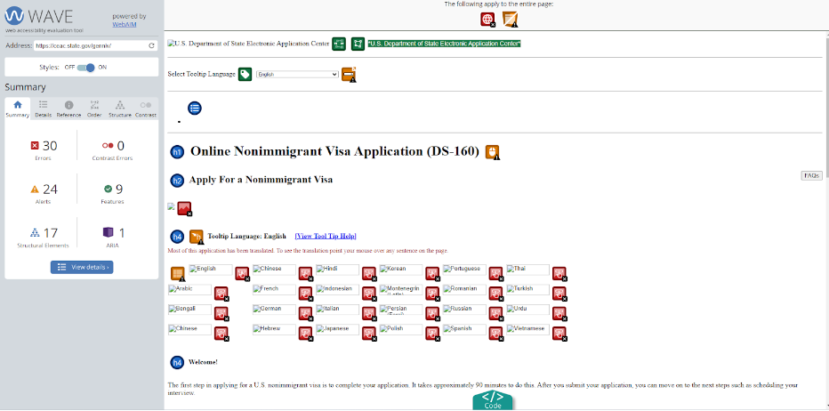
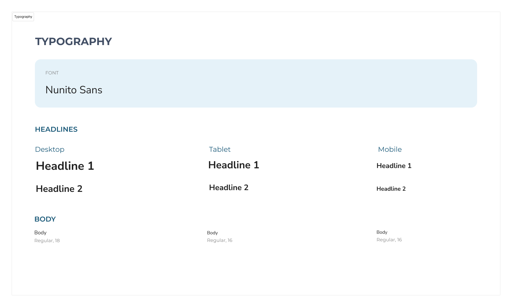
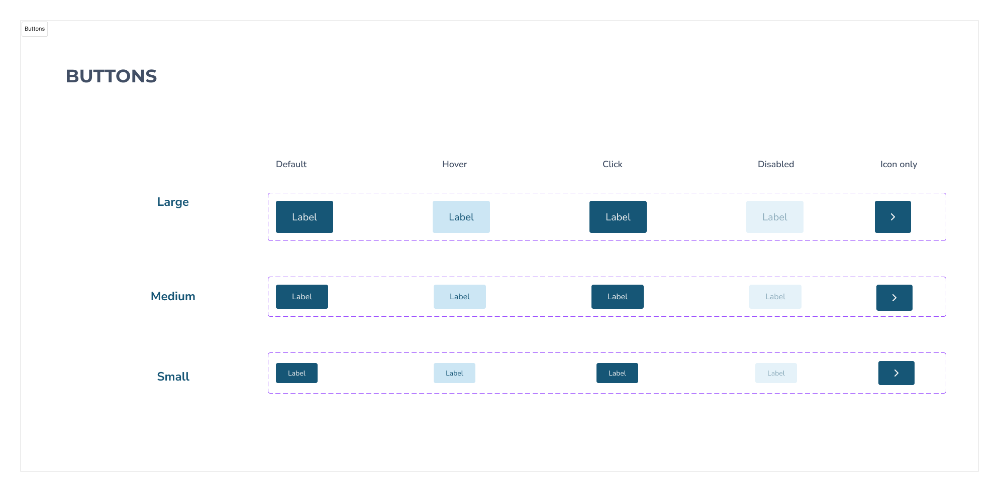
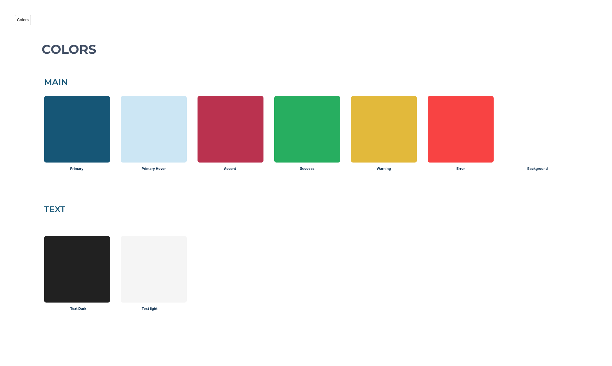
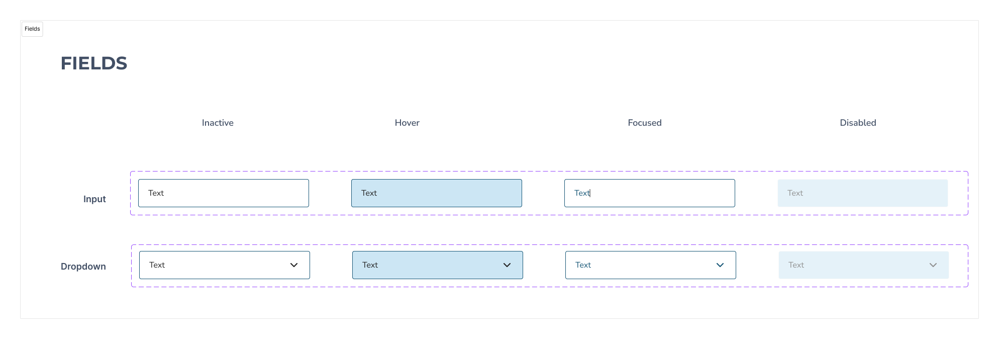
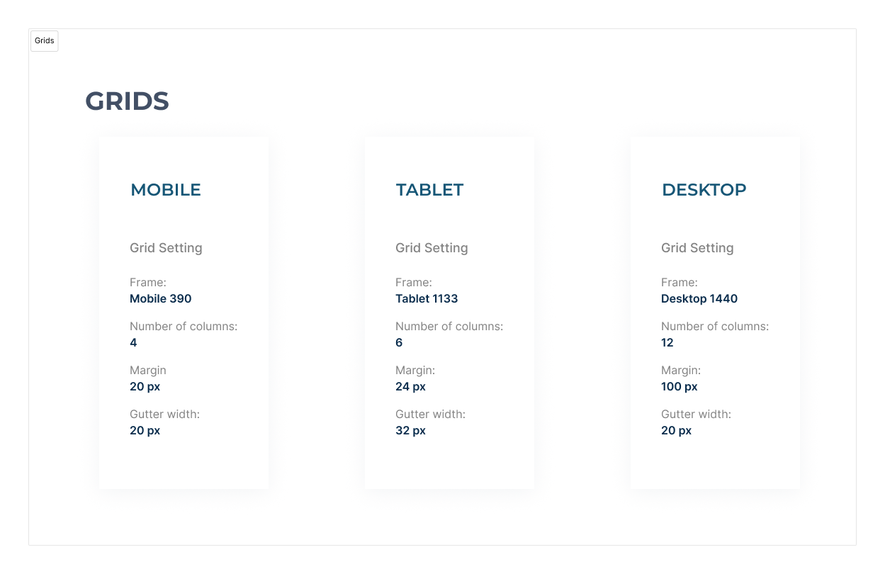

I'm Vishak Vinod!
Graduate student at Brown University based out of Providence, Rhode Island with prior experience designing and executing data intensive applications
Analyzing the Webpage
Having had to interact a lot with the immigration website of the Department of State as an international student applying for a permit to the United States, I found it unintuitive and visually unappealing. A decision was made to design it better keeping in mind design principles for a class project. Problems were identified and solutions were designed in the areas of spacing, labelling and organizing the sites information architecture.
To better understand the condition of the webpage, a WAVE report was generated
Having looked at the webpage and the WAVE report, A list of findings were compiled as follows:
- Lots of empty space to the right of the webpage
- Select Tooltip Language Text on the top right of the screen was in the same color as it’s background
- Breadcrumb and Title of the page are placed next to each other and with similar wording. Looks repetitive to the user
- Underlined text in between links that is not a link
- Unclear on where to start reading. What to go through first
- Tooltip dropdown is not visible
- When you hover over the globe, you get an option to filter out dropdown selections but it’s not intuitive
- After clicking a region on the globe, The screen does not reflect the selection. The user might hesitate before clicking on the country and finding a filtered list
- Clicking on the captcha takes you to a screen giving information on what a captcha is instead of making the captcha larger or generating a new captcha. After reaching this screen, the user can’t go back to the home page and will have to reopen the window in a new tab
- After selecting the country in the dropdown, the tooltip changed to the native language of that country and left the user in the dark about this change. Not only that,it overwrote the language preference set above.
Brainstorming with Speed Sketches
Speed sketching Process:
- Create a 3x3 grid
- Set a timer and set it to 9 minutes. Start it.
- Sketch out redesigns of the page that is to be changed. These are very rough brainstorming images
- Come up with 9 redesigns before the timer runs out. Ideally, each redesign should take no longer than one minute, and be as unique as possible.
Low-Fidelity Wireframes
After speed sketching and listing out problems with the webpage UI, solutions were compiled and Lo-Fi mocks were made for desktop, tablet, and mobile
Style Guide
    Hi-Fi Mockups
Finally High Fidelity Mockups of the newly designed webpage were created